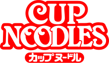
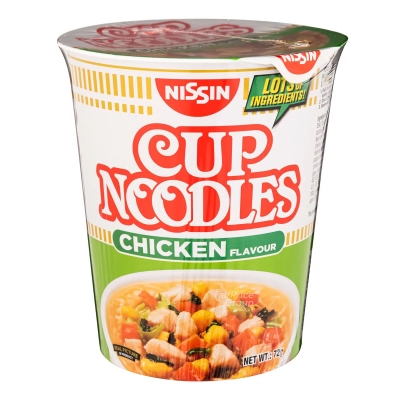
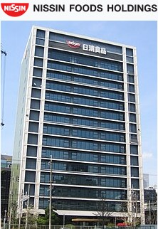
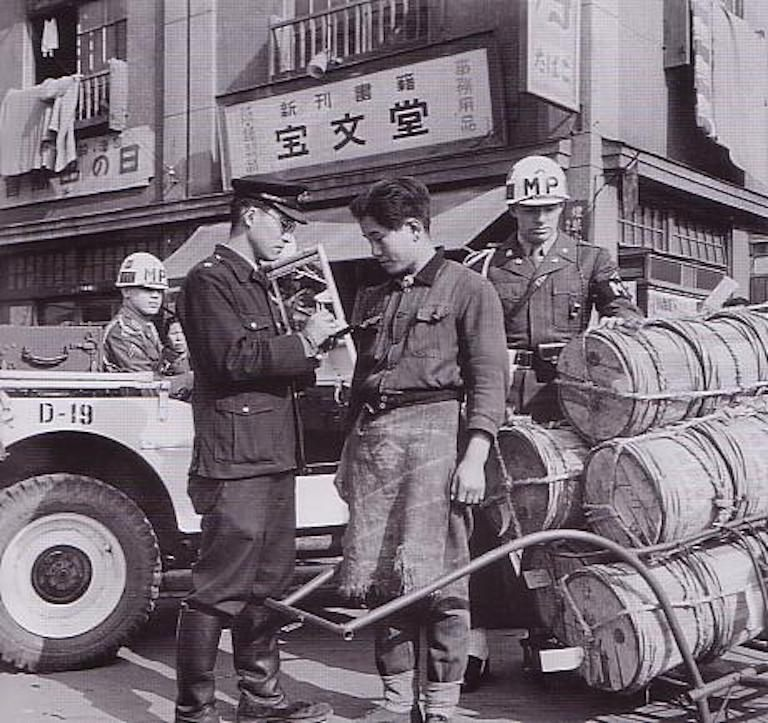
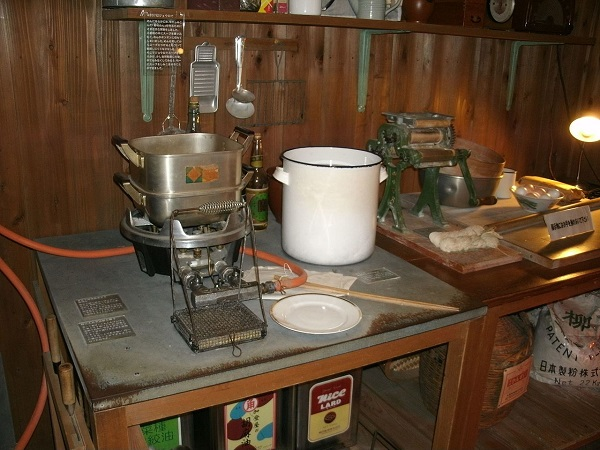
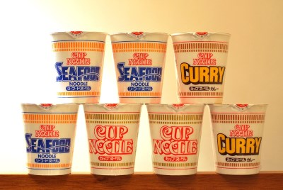

About Cup Noodles
Cup Noodles (カップヌードル, Kappu Nūdoru) is a brand of cup instant ramen developed in 1971 and manufactured by Japanese food company Nissin Foods. Single servings of the product are packaged in foam, plastic, or paper cups and are prepared by adding boiling water.
The brand name Cup Noodle is also a registered trademark of Nissin Foods. In some countries, such as Japan, this singular form Cup Noodle is used. The product has inspired various competing products, such as Maruchan's Instant Lunch.
Other popular instant ramens around the world
Click flags to reveal
Shin Ramyun (Korean: 신라면, styled as 辛라면 with Hanja) is a brand of instant noodle (including cup ramyeon) that has been produced by the South Korean food company Nongshim since 1 October 1986. It is now exported to over 100 countries, and is the best-selling instant noodle brand in South Korea.

Indomie is a brand of instant noodle produced by the Indonesian company Indofood. Indofood itself is the largest instant noodle producer in the world with 16 factories. Over 28 billion packets of Indomie are produced annually, and the brand is also exported to more than 90 countries around the world.

How Instant Ramen came to be

Momofuku Ando
安藤 百福
Born: March 5, 1910
Bokushi-shi, Kagi-chō, Japanese Taiwan
Died: January 5, 2007 (aged 96)
Ikeda, Osaka Prefecture, Japan
Instant noodles were invented in 1958 by Momofuku Ando, the Taiwanese-born founder of the Japanese foodcompany Nissin. He used Chicken Ramen as the first instant ramen noodles.
Founding of Nissin
Ando was convicted of tax evasion in 1948 and served two years in jail. In his biography, Ando said he had provided scholarships for students, which at the time was a form of tax evasion. After he lost his company due to a chain-reaction bankruptcy, Ando founded what was to become Nissin in Ikeda, Osaka, Japan, starting off as a small family-run company producing salt.
Invention of Nissin Chikin Ramen
handout to the Japanese army
With Japan still suffering from a shortage of food in the post-war era, the Ministry of Health tried to encourage people to eat bread made from wheat flour that was supplied by the United States. Ando wondered why bread was recommended instead of noodles, which were more familiar to the Japanese. The Ministry's response was that noodle companies were too small and unstable to satisfy supply needs, so Ando decided to develop the production of noodles by himself. The experience convinced him that "Peace will come to the world when the people have enough to eat."
at the momofuku Andō Instant Ramen Museum
On August 25, 1958, at the age of 48, and after months of trial and error experimentation to perfect his flash-frying method, Ando marketed the first package of precooked instant noodles. The original chicken flavor is called Chikin Ramen. It was originally considered a luxury item with its price of ¥35 (US$0.10) in 1958 under the then exchange rate of 360 yen to the dollar but equivalent to ¥608 by 2021 or US$5.69 under the current exchange rate of US$1 =¥106.775 in around six times that of traditional udon and soba noodles at the time. As of 2016, Chicken Ramen is still sold in Japan and now retails for around ¥120 (US$1.12), or approximately one-third the price of the cheapest bowl of noodles in a Japanese restaurant.
Cup Noodles invention
According to The Financial Times, Ando's invention of Cup Noodles in 1971, at the age of 61, helped spark the popularity of instant noodles overseas. He had observed that Americans ate noodles by breaking the noodles in half, putting them into a paper cup, and pouring hot water over the noodles. They also ate them with a fork instead of chopsticks. Ando was inspired, and felt that a Styrofoam cup—with a narrower bottom than the top—would be the ideal vessel for holding noodles and keeping them warm. Eating the noodles would then be as easy as opening the lid, adding hot water and waiting. This simplicity, efficiency and low price of Cup Noodles went on to transform Nissin's fortunes.
Ando began the sales of his most famous product, Cup Noodle (カップヌードル, Kappu Nūdoru), on September 18, 1971, with the idea of providing a waterproof polystyrene container. As prices dropped, instant ramen soon became a booming business. Worldwide demand reached 98 billion servings in 2009.
Nissin Beef Curry Meshi Cup Noodle Commercial
An example of an advertisment for one of the many flavors of instant ramen, this ad more specfically
advertises Curry Beef Ramen.
This is one of the many examples of Nissin's creative marketing
strategies
to appeal to a wider consumer base.